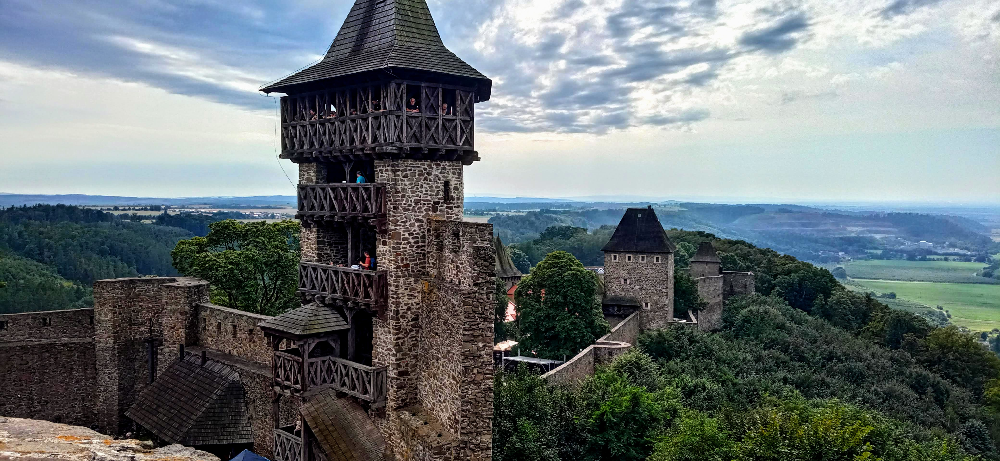
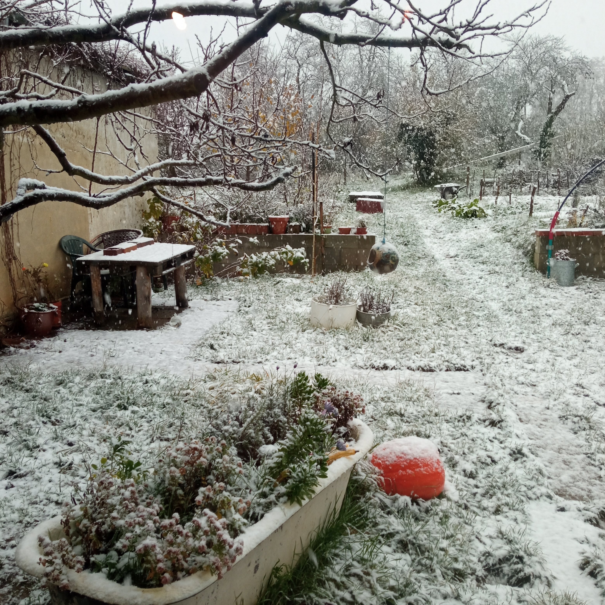

Alchymie: Kompostujeme a tlíme
O domácím kompostu, zahradě a životním cyklu hmoty
Archiv textů o pohybu, zahradě, místě a pomalejším životě.
O domácím kompostu, zahradě a životním cyklu hmoty

Jak jsme vyráběli biouhel ze zahradního odpadu

Podzimní bilancování zahrady a přípravy na zimu

První sněžení a jeho uklidňující efekt

Únor jako ideální plánovací období pro zahradničení a život na venkově